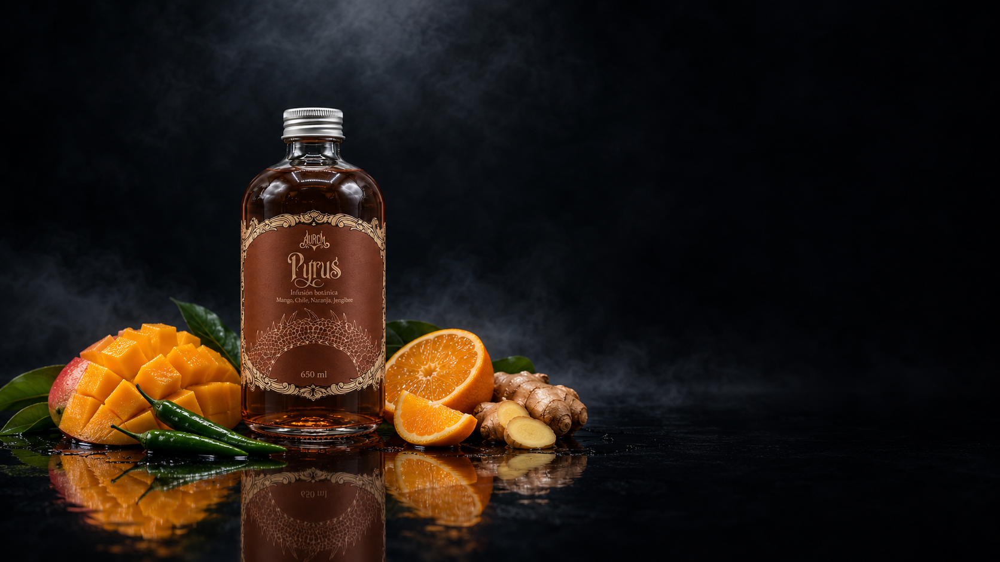

Pyrus
Dragones alquímicos y fuego ancestral
Pyrus nace de los dragones alquímicos y el fuego ancestral. Mango, chile verde, naranja y jengibre se reúnen en una combinación tropical, cítrica y picante que interpreta la intensidad del fuego a través del sabor.